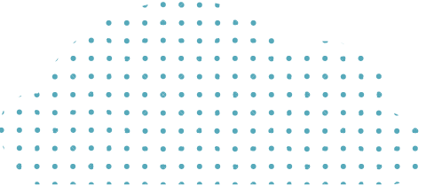
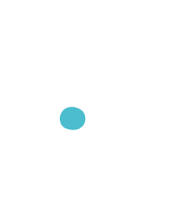
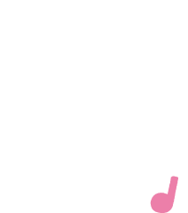
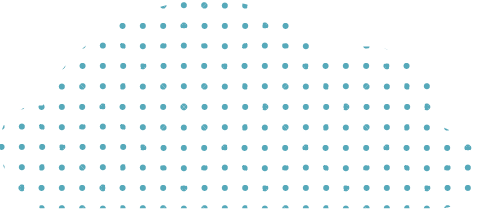
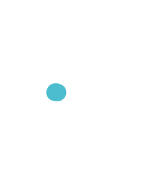
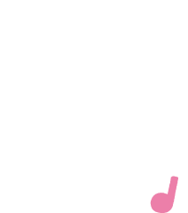
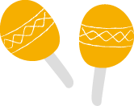
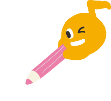
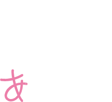

ハッピースマイルとは

目指す未来
私たちの使命
代表挨拶
「子どもたちに元気ですくすく育って欲しい」
「それぞれの個性や能力を高めてほしい」
と願う保護者さまのお声に耳を傾け、
誕生しました。
お子さま一人ひとりの個性、心、感情を
大切にし、子どもたちが自分らしく
楽しいこれからを送れる。
楽しい！うれしい！出来た！が
みんなの笑顔につながる。
そんな思いを胸に日々の療育を行っています。
まずは、お気軽に遊びに来てください。
代表 松浦 純子
ハッピースマイルの特徴
ハッピースマイルでは、認知面・社会性・言語面など、
コミュニケーションに必要なことばの基礎を育みます。
認知面とは、見たり、聴いたり、触ったりして、それが何なのか判断し解釈すること。
社会性とは、親・友だち・大人など、人との関わり合いに関すること。
言語面とは、ことばを実際に用いるために、単語の意味や文法やルールを理解していく力のこと。
これらが相互に関わり合うことでコミュニケーションの基盤が作られます。
これらをふまえ、個別療育では一人ひとりの発達に合わせて、それぞれの得意や苦手、お子さま自身が持つ気質等を考慮しながら、できることや興味を持っていることからスモールステップで周囲の物・人への関心を広げたり、ことばの正しい使い方や理解する能力を育みます。
さらに、集団での活動では視覚的構造化されたスケジュールを示すなど、一日の流れの見通しを持たせるサポートや、イラストを含む視覚支援を提示することで理解力の向上に繋げます。
なるべく集中しやすい環境にするなど環境調整も配慮しながら、集団で他児と意識的に関わることを促し、社会性を育みます。
-
 
ことば音楽療法認定教室
一人ひとりの発達段階に応じて、2つの音楽療育を織り交ぜた療育を行なっています。また、言語聴覚士による言語療育も行うことで、さらなる言葉の発達をサポートします。
話す力・聞く力・理解する力を養うことでコミュニケーション能力を育むことを目的とし、個々のお子さまに寄り添った療育を行っています。 -


SST（ソーシャルスキル
トレーニング）SSTでは、専門知識を持った作業療法士による個別療育、集団療育を実施しています。対人関係や感情のコントロールの支援を行い、「友だちや社会とうまく関わっていける」「自分の気持ちを適切な方法で伝える」「相手の気持ちを考える」など、遊びや集団プログラムの中でロールプレイを繰り返し、日常生活を円滑に営むことを目指しています。
 -


公文式学習の導入
公文式学習とは、一人ひとりの可能性を追求し、その能力を最大限に伸ばす学習方法です。公文式では、年齢や学年にとらわれず、一人ひとりの力に応じた「ちょうどの学習」を取り組むことにより、学ぶ楽しさやできる喜びを育みながら学力を高め、子ども達の能力を最大限に伸ばすことを狙いとしています。
※株式会社公文教育研究会との契約に基づき、公文式学習導入施設として教材提供と学習支援サポートを受けています。

-

スタッフ全員が有資格者
当施設では、スタッフ全員が専門的な知識のある有資格者です。
言語聴覚士、作業療法士、ことば音楽療法士、音楽療法士、保育士、教員免許、特別支援学校教員免許、社会福祉主事任用資格、幼稚園教諭、学童保育支援員、社会福祉士、精神保健福祉士、リトミック指導者など多数の専門スタッフがサポートすることにより、質の高い療育の提供を実現しています。
施設概要
ハッピースマイルについて
- 名称
- 児童発達支援
ハッピースマイル北堀江
放課後等デイサービス
ハッピースマイル北堀江 - 所在地
- 〒550-0014
大阪市西区北堀江4-17-3
リバーサイド北堀江201 - Tel
- 06-7172-2217
- Fax
- 06-7172-2217
- 設立
- 児童発達支援
2017年7月1日
放課後等デイサービス
2017年7月1日
- 名称
- 児童発達支援
ハッピースマイル南堀江
放課後等デイサービス
ハッピースマイル南堀江 - 所在地
- 〒550-0015
大阪府大阪市西区南堀江3-7-19
PGSビル2・3階 - Tel
- 06-6536-2214
- Fax
- 06-6536-2213
- 設立
- 児童発達支援
2017年7月1日
放課後等デイサービス
2017年7月1日
利用時間
- 利用時間
- 〈平日〉12:00〜18:00
〈土曜・祝日〉11:00〜17:00 - 休業日
- 日曜・GW・お盆・年末年始
運営会社
- 名称
- 株式会社HAPPY SMILE
- 所在地
- 〒550-0014
大阪市西区北堀江4-17-3
リバーサイド北堀江201 - Tel
- 06-7172-2217
- 主な事業
- 児童発達支援・
放課後等デイサービスの運営 - 従業員
- 100名（パート職員を含む／2020年7月現在）
- 設立
- 2017年7月1日
- 顧問
弁護士 - 弁護士法人レクシード